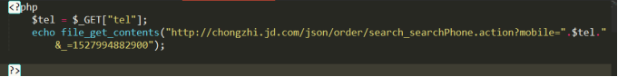

原文连接:https://www.cnblogs.com/rope/p/10737428.html
一、TodoList
1.1安装依赖
安装相关依赖：
npm install --save-dev webpack
npm install --save-dev babel-loader babel-core babel-preset-es2015
npm install --save-dev vue-loader
npm install --save-dev css-loader
npm install --save-dev vue-template-compiler
npm install --save-dev stylus stylus-loader
npm install --save vue
npm install --save vuex1.2配置虚拟服务器
【第一步：安装依赖】
npm install -g json-server【第二步：json-server的服务器启动】
启动需要json文件作为支撑，新建data.json文件做服务数据：
{
"mapList" : [
{"id":1 ,"title" : "吃饭", "done" : false},
{"id":2 ,"title" : "睡觉", "done" : false},
{"id":3 ,"title" : "做饭", "done" : false},
{"id":4 ,"title" : "扫地", "done" : false}
]
}
启动命令json-server命令：
json-server 数据文件路径 -s 静态化目录 -p 8080
json-server www/data/data.json -s ./www -p 8080
-s是 --static
-p是 --port
最终没有使用webpack-dev-server模拟服务器
配置webpack.config.js文件：
const path = require('path');
const {VueLoaderPlugin} = require('vue-loader'); //最新版webpack需要引入插件
module.exports = {
//程序的入口文件
entry: "./www/app/app.js",
//程序的出口（打包的文件）
output : {
//打包文件输出的路径
path : path.resolve(__dirname, "www/dist"),
//打包文件的名称
filename : "all.js",
// publicPath:"/public" //这是对webpack-dev-server的配置，配置虚拟路径
},
//让webpack监听变化，自动打包
watch : true,
mode : "development",
//配置webpack的模块插件
module:{
//关于模块的配置规则
rules : [
{
//模块规则（配置 loader、解析器等选项）
test : /\.js$/, //解析的时候匹配到的都是js文件
include: [
path.resolve(__dirname, "www/app") //翻译什么文件夹
],
exclude: [
path.resolve(__dirname, "node_modules") //不翻译什么文件夹
],
loader : "babel-loader",
options : {
presets : ["es2015"]
}
},
{
test: /\.vue$/,
include: [
path.resolve(__dirname, "www/app") //翻译什么文件夹
],
exclude: [
path.resolve(__dirname, "node_modules") //不翻译什么文件夹
],
loader: 'vue-loader',
options :{
loaders : {
stylus:'vue-style-loader!css-loader!stylus-loader'
}
}
},
{
test:/\.css$/,
use: ['vue-style-loader','css-loader']
}
// {
// test: /\.styl(us)?$/,
// use: [
// 'vue-style-loader',
// 'css-loader',
// 'stylus-loader'
// ]
// }
]
},
resolve: {
alias: { //配置别名
'vue$': 'vue/dist/vue.esm.js' // 用 webpack 1 时需用 'vue/dist/vue.common.js'
}
},
//最新版webpack需要引入插件
plugins : [
new VueLoaderPlugin()
]
}
【第三步：访问接口】
获取所有的数据：GET
增加数据：POST
得到某一条数据:GET
删除某一条：DELETE
更新原始数据：PUT （更新条目的所有的属性）、PATH（更新条目的某一个属性）
自带分页：page（第几页）limit（每页有多少条）
http://localhost:8080/mapList 返回.json文件所有数据（数组）
http://localhost:8080/mapList/1 返回id=1的数据，采用这种路径风格id必须为小写（数组）
http://localhost:8080/mapList/?Name=lst 返回Name=lst的用户数据（数组）分页查询：参数为 _start, _end, _limit，并可添加其它参数筛选条件，如：
http://localhost:8080/mapList?_start=6&_limit=3
http://localhost:8080/mapList?_start=3&_end=6
排序：参数为_sort, _order
http://localhost:8080/mapList?_sort=id&_order=asc
http://localhost:8080/mapList?_sort=user,views&_order=desc,asc
操作符：_gte, _lte, _ne, _like
_gte大于，_lte小于， _ne非， _like模糊查询，q关键词查询
http://127.0.0.1:8080/mapList/?q=吃1.3 TodoList
查询数据
相关步骤：
在created生命周期中发出一个GETALL的异步命令，去actions里面发异步请求。
App.vue
<script>
export default {
created(){
this.$store.dispatch("GETALL");
}
}
</script>
main.js
import Vue from "vue";
import Vuex from "vuex";
import App from "./App.vue";
Vue.use(Vuex);
const store = new Vuex.Store({
state : {
todos : []
},
mutations: {
GETALL(state,payload){
// state.todos.push(payload)
state.todos = payload;
}
},
actions :{
async GETALL({commit}){
//请求数据库中的数据，然后存储到state的todos中
var data = await fetch("/maplist").then(data=>data.json());
//发出commit()命令，并且将参数当载荷传递过去
commit("GETALL", data);
}
}
});
new Vue({
el : "#app",
store,
render:(h)=>h(App)
})异步请的数据回调成功后，将数据以载荷的形式发送到mutations，再去修改state 的数据
state全局仓库有了数据，就可以在App.vue进行循环渲染。
App.vue
<template>
<div>
<ul>
<li v-for="item in todos">
{{item.title}}
</li>
</ul>
</div>
</template>
<script>
export default {
created(){
this.$store.dispatch("GETALL");
},
computed : {
todos(){
return this.$store.state.todos
}
}
}
</script>
下一步：需要将li标签拆分成组件：
App.vue
<template>
<div>
<ul>
<li is="TodoLi" v-for="item in todos" :item="item"></li>
</ul>
</div>
</template>
<script>
import TodoLi from "./components/TodoLi.vue";
export default {
created(){
this.$store.dispatch("GETALL");
},
computed : {
todos(){
return this.$store.state.todos
}
},
components:{
TodoLi
}
}
</script>
TodoLi.vue
<template>
<li>{{item.title}}</li>
</template>
<script>
export default {
props : ["item"]
}
</script>删除数据
接下来写增删改查业务，推荐先写删除，因为删除值需要id
TodoLi.vue
<template>
<li>
<span>{{item.title}}</span>
<button @click="del(item.id)">删除</button>
</li>
</template>
<script>
export default {
props : ["item"],
methods:{
del(id){
this.$store.dispatch("DEL", {id})
}
}
}
</script>const store = new Vuex.Store({
state : {
todos : []
},
mutations: {
GETALL(state,payload){
// state.todos.push(payload)
state.todos = payload;
},
DEL(state, payload){
// 根据id删除state的数据
state.todos = state.todos.filter(item=>{
return item.id != payload.id;
})
}
},
actions :{
async GETALL({commit}){
//请求数据库中的数据，然后存储到state的todos中
var data = await fetch("/maplist").then(data=>data.json());
//发出commit()命令，并且将参数当载荷传递过去
commit("GETALL", data);
},
async DEL({commit},payload){
//向服务器发出删除请求，删除data.json中的数据
var data = await fetch("/maplist/" + payload.id, {
method:"DELETE",
}).then(data => data.json());
commit("DEL", payload); //删除全局state仓库的数据
},
}
});
新增业务
App.vue
<template>
<div>
<div>
<input type="text" v-model.trim="txt">
<button @click="add">新增</button>
</div>
<ul>
<li is="TodoLi" v-for="item in todos" :item="item"></li>
</ul>
</div>
</template>
<script>
import TodoLi from "./components/TodoLi.vue";
export default {
data(){
return {
txt : ''
}
},
methods :{
add(){
if(this.txt == '') return;
//发出新增的异步请求
this.$store.dispatch(ADD, {id: new Date() - 0, title:this.txt, done:false})
this.txt = ""
}
},
components:{
TodoLi
}
}
</script>
main.js
actions : {
//新增数据
async ADD({ commit }, payload) {
//向data.json文件中插入数据
var data = await fetch("/maplist/", {
method: "POST",
headers:{'Content-type' : 'application/json'},
body: JSON.stringify(payload)
}).then(data => data.json());
commit("ADD", data); //新增数据到state，影响视图更新
}
},
mutations : {
ADD(state, payload) {
state.todos.push(payload);
}
}修改数据
TodoLi.vue
<template>
<li>
<span v-if="!isShow" @dblclick="showInput">{{item.title}}</span>
<input type="text" v-if="isShow" v-model="item.title" @blur="hideInput(item)" v-focus>
<button @click="del(item.id)">删除</button>
</li>
</template>
<script>
export default {
props : ["item"],
data(){
return{
isShow:false
}
},
methods:{
del(id){
this.$store.dispatch("DEL", {id})
},
showInput(){
//双击显示input
this.isShow = !this.isShow;
},
hideInput(item){
console.log(item)
//失去焦点隐藏input，并且发送CAHNGETITLE命令修改title内容
this.isShow = !this.isShow;
this.$store.dispatch("CHANGETITLE",item)
}
},
directives:{
//自定义组件指令，自动获取焦点
focus :{
inserted(el){
el.focus();
}
}
}
}
</script>
main.js
const store = new Vuex.Store({
state : {
todos : []
},
mutations: {
CHANGETITLE(state, payload) {
// 写法1
// state.todos.forEach(item=>{
// if (item.id == payload.id){
// item.title = payload.title;
// }
// })
// 写法2
state.todos = state.todos.map(item => {
if(item.id == payload.id) {
return payload
}
return item;
})
}
},
actions :{
//修改请求
async CHANGETITLE({commit}, payload) {
var data = await fetch("/maplist/" + payload.id, {
method: "PATCH",
headers: { 'Content-Type': 'application/json' },
body: JSON.stringify(payload)
}).then(data => data.json());
commit("CHANGETITLE", data); //虽然实现了修改，但是为了完整性还是写上
},
}
});
修改任务事件：当前任务是否做了，需要一个复选框
todoli.vue
<li>
<input type="checkbox" v-model="item.done" ref="cbox" @click="changeDone(item)">
<spanv-if="!isShowInput"@dblclick="showInput" :class="{cur:item.done}">{{item.title}}</span>
</li>
<script>
methods:{
changeDone(item){
console.log(this.$refs.cbox.checked);
// 这里使用的是ref钩子 这样能得到 复选框的状态
// 提交的时候 只需要提交 id 复选框的状态就行了
this.$store.dispatch("CHANGEDONE",{
id : item.id,
done : this.$refs.cbox.checked
})
}
}
</script>
<style>
.cur{text-decoration: line-through;}
</style>
app.js修改done和修改title的方式方法都一样，只要改方法名即可。
const store = new Vuex.Store({
mutations:{
CHANGEDONE(state, payload){
state.todos = state.todos.map(item => {
if(item.id == payload.id){
return payload
}
return item
})
}
},
actions:{
async CHANGEDONE({commit},payload){
var data = await fetch("/mapList/" + payload.id,{
"method" : 'PATCH',
"headers":{
'Content-Type':"application/json"
},
body:JSON.stringify({done:payload.done})
}).then(res => res.json());
commit("CHANGEDONE",data)
},
}
});筛选按钮：计算已做未做事项
筛选按钮：计算已做未做事项
app.js
const store = new Vuex.Store({
state:{
todos:[]
},
mutations:{
...
},
actions:{
...
},
getters:{
yizuo:function(state){
return state.todos.filter(item => {
return item.done == true //true表示已做
})
},
weizuo:function(state){
return state.todos.filter(item => {
return item.done == false //false表示未做
})
}
}
});
App.vue
<template>
<div>
<div>
<input type="text" v-model.trim="txt">
<button @click="add">新增</button>
</div>
<ul>
<li v-for="item of todos" is="TodoLi" :item="item"></li>
</ul>
<div>
全部：{{$store.state.todos.length}}个事项<br>
已做：{{$store.getters.yizuo.length}}个完成事项<br>
未做：{{$store.getters.weizuo.length}}个代办事项<br>
</div>
<div>
<button @click="all">查看全部</button>
<button @click="yizuo">查看已做</button>
<button @click="weizuo">查看未做</button>
</div>
</div>
</template>
<script>
import todoli from './components/TodoLi.vue'
export default {
data() {
return {
txt: '',
state: 'all'
}
},
computed: {
todos() {
if(this.state == 'all'){
return this.$store.state.todos
}else if(this.state == 'yizuo'){
return this.$store.getters.yizuo
}else if(this.state == 'weizuo'){
return this.$store.getters.weizuo
}
}
},
methods: {
all() {
this.state = 'all'
},
yizuo() {
this.state = 'yizuo'
},
weizuo() {
this.state = 'weizuo'
}
}
}
</script>所有业务都已经完成，但是由于组件和数据太乱，下面开始拆分store。
二、拆分store
我们都知道vuex是vue用来集中管理状态的容器（管理全局的状态），实现不同组件之间相互的数据访问。我们说一下vuex拆分store以及多模块管理。如果一个项目非常大的话状态就会非常的多，如果不进行分类处理，所有的状态都维护在一个state里面的话，状态管理就会变得非常的混乱，这样非常不利于项目的后期维护。现在前端推崇模块化开发，为的就是提高开发效率和维护效率，避免重复工作。那么vuex是怎么样解决这个问题的呢？这个时候我们今天要讲的主角modules就要闪亮登场了。
第一步：将main.js中的store拆分到一个js文件中。
export const storeObj = {
state:{
...
},
mutations:{
...
},
actions:{
...
},
getters:{
...
}
}
将store中的index.js在main.js中引入
import {storeObj} from "./store/index.js";
const store = new Vuex.Store(storeObj);
第二步：拆分state、mutations、actions、getters
给他们分别创建单独的js文件，默认暴露
export default {
}
可以将我们定义的这些对象加入到Vuex的store中
在store中index.js用import引入：


import state from "./state.js";
import mutations from "./mutations.js";
import actions from "./actions.js";
import getters from "./getters.js";
export const storeObj = {
state:{
...state
},
mutations:{
...mutations
},
actions:{
...actions
},
getters:{
...getters
}
}
由于没装翻译“...”对象解构语法，会报错：
npm install --svae-dev babel-plugin-transform-object-rest-spread
配置webpack.config.js
{
test: /\.js?$/, //解析的时候匹配到的都是js
loader: "babel-loader",
//翻译字典
options: {
presets: ["es2015","ES2015"],
plugins: ["transform-object-rest-spread"]
}
},配置完成后就可以识别“...”解构了。
至此，还没拆完，使用常量代替mutations集合actions的type名字
新建一个types.js文件，在里面存常量（大写字母的方法）
注意：把这些常量放到单独的文件中可以让你的代码合作者对整个app包含mutation和actions一目了然。
用不用常量代替取决于你--在需要多人协作的大型项目中，这会很有帮助，但是如果你不喜欢，完全可以不这么做。
export const GETALL = "GETALL";
export const DEL = "DEL";
export const ADD = "ADD";
export const CHANGETITLE = "CHANGETITLE";
export const CHANGEDONE = "CHANGEDONE";
暴露常量的名字后，分别在mutations和actions的js文件中使用这些来代替：
mutations.js
import {GETALL,DEL,ADD,CHANGETITLE,CHANGEDONE} from "./types.js";
export default {
[GETALL](state, payload) {
},
[DEL](state, payload) {
},
[ADD](state, payload) {
},
[CHANGETITLE](state, payload) {
},
[CHANGEDONE](state, payload) {
}
}
actions.js
import {GETALL,DEL,ADD,CHANGETITLE,CHANGEDONE} from "./types.js";
export default {
async [GETALL]({ commit }) {
},
async [DEL]({ commit }, payload) {
},
async [ADD]({ commit }, payload) {
},
async [CHANGETITLE]({ commit }, payload) {
},
async [CHANGEDONE]({ commit }, payload) {
}
}注意：上方mutations和actions中的[types.ADD]写法，因为types.ADD是一个对象，所以不能直接当做函数名来写，需要用到ES2015风格的计算属性命名功能来使用一个常量作为函数名，才能使用。
https://vuex.vuejs.org/zh/guide/mutations.html
三、异步请求数据（跨域）
3.1 Ajax不能跨域
比如在Apache中演示：
<html>
<head>
<title>Document</title>
</head>
<body>
<script src="jquery-3.3.1.min.js"></script>
<script>
$.get("http://127.0.0.88/a.txt" , function(data){
console.log(data);
});
</script>
</body>
</html>试图在127.0.0.1请求127.0.0.88/a.txt的JSON数据，会报错：
浏览器会阻止对ip地址不同，或者端口号不同的数据请求。
此时我们必须要进行请求，就是跨域技术。
3.2用jQuery复习JSONP跨域
<html>
<head>
<title>Document</title>
</head>
<body>
<script>
function haha(info){
console.log(info);
}
</script>
<script src="http://127.0.0.88/a.txt"></script>
</body>
</html>在页面上定义一个函数，然后用script标签引入这个语句，执行这个语句。此时数据就通过函数的实参和形参的结合，传入了页面。script没有跨域限制的，可以轻松src引入其他ip地址的js文件。
JSONP叫做JSON 和 Padding（补白）
我们写一个接口，这个接口不是一个JSON，而是一个语句，这个语句是函数的调用。
升级：把a.txt改为a.php（这个文件不需要会，因为是后端的事情）
<?php
$callback = $_GET["callback"]; //获取get请求
echo $callback . '({"a" : 100 })';//JSON参数
?>
点击按钮再发出JSONP跨域请求。
本质上是点击按钮的瞬间，创建了一个script标签，script标签的src指向了我们刚刚写的那个接口，那个接口是函数的调用。我们快速定义这个函数，使得src引入的js能够调用这个函数，从而通过实参和形参的结合，将数据传入页面。
<script>
$("button").click(function(){
//创建script标签
var $o = $("<script><\/script>");
//创建一个src
$o.attr("src" , "http://127.0.0.88/a.php?callback=xixi");
//定义全局函数
window.xixi= function(data){
//接收到数据的回调函数
console.log(data);
}
//上树
$("head").append($o);
//下树
$o.remove();
});
</script>
但实际上不用这么麻烦，jQuery会自动帮我们发出jsonp跨域：
<html lang="en">
<head>
<title>Document</title>
</head>
<body>
<button>按我发出请求</button>
<script>
$("button").click(function(){
$.ajax({
"dataType" : "JSONP" ,
"url" : "http://127.0.0.88/a.php",
"success" : function(data){
console.log(data);
}
})
});
</script>
</body>
</html>jQuery会随机生成一个函数名。
原理和我们写的一样的，都是：
1）瞬间创建一个内部函数
2）瞬间创建一个script标签，src指向我们的url地址
3）瞬间上树
4）瞬间下树
3.3跨域方法1：JSONP跨域
之前我们项目的数据和前端的文件都是同源的（就是在同一个接口下）。
但是，工作中，一定是要跨域请求数据的。
比如我们的前端项目运行在8080端口，要请求3000端口的数据，就是跨域。
事实上，工作中，模拟接口一定是不同ip的，模拟接口运行在办公室的局域网上的。
每个人的电脑都是同一个局域网的，后台哥哥会给你一个后端接口文档，接口在演示的时候，很有可能是3000、8000等等。但你的前端项目跑在webpack-dev-server的8080端口，就涉及到跨域请求数据了。
创建一个后端文件夹（server_side）和前端项目文件夹（Vue_study）：
前端后端共同跑：后端3000，前端8080

app.js
var express = require("express");
var app = express();
app.get("/a", function(req,res){
// res.json({"a":100});
res.jsonp({"a":100}); //jsonp()能自动得到callback参数请求
})
app.listen(3000);http://127.0.0.1:3000/a?callback=haha
App.vue
<template>
<div>
<h1>首页</h1>
<button @click="addServer">请求数据</button>
</div>
</template>
<script>
export default {
methods:{
addServer(){
$.ajax({
dataType:"JSONP",
url: "http://127.0.0.1:3000/a",
success:function(data){
console.log(data)
}
})
}
}
};
</script>3.4跨域方法2：CORS跨域
面试想要回答的好，看下面文章：
https://developer.mozilla.org/zh-CN/docs/Web/HTTP/Access_control_CORS
http://www.ruanyifeng.com/blog/2016/04/cors.html
跨域资源共享（CORS，Cross-Origin Resource Sharing）机制允许Web应用服务器进行跨域访问控制，从而使得跨域数据传输得以安全进行。浏览器支持在API容器中（例如XMLHttpRequest或fetch）使用CORS，以降低跨域HTTP请求所带来的风险。
说白了，就是在HTTP下响应的头部加一句话。
CORS是一个W3C标准，全称是"跨域资源共享"（Cross-origin resource sharing）。
它允许浏览器向跨源服务器，发出XMLHttpRequest请求，从而克服了AJAX只能同源使用的限制
我们在后端一般就加Access-Control-Allow-Origin 值为“*”
问题：8080的前端页面请求3000后端的页面，是谁禁止的？是浏览器禁止的，为了安全。此时就要写一个HTTP下行响应头部，来告诉浏览器，这次请求是允许的，这是最简单的跨域方法，但是IE8才开始兼容。
app.js后端：
var express = require("express");
var app = express();
app.get("/a", function(req,res){
//表示允许任何域名来源的请求
res.setHeader("Access-Control-Allow-Origin", "*");
res.json({a:100});
})
app.listen(3000);
App.vue此时在前端项目中就可以随意跨域：
<template>
<div>
<h1>首页</h1>
<button @click="addServer">请求数据</button>
</div>
</template>
<script>
export default {
methods:{
addServer(){
$.get("http://127.0.0.1:3000/a", function(data){
console.log(data)
})
}
}
}
</script>3.5跨域请求方法3：代理跨越（proxy）
“代理”就是偷数据。
拿PHP做例子，实现一下偷百度首页（了解即可）
<?php
echo file_get_contents("http://www.baidu.com/");
?>运行tou.php就直接是百度首页了。
比如京东充话费接口，可以被后端偷来：


然后在前端项目中使用：
<body>
<h1>手机归属地查询（业绩最快，完全免费）</h1>
<input type="text" id="tel">
<button>查询</button>
</body>
<script type="text/javascript" src="js/jquery-2.2.4.min.js"></script>
<script type="text/javascript">
$("button").click(function(){
var tel = $("#tel").val();
//可以请求自己服务器的数据，只不过数据由后端tou.php偷回来。
$.get("http://127.0.0.1:8088/tou.php?tel=" + tel, function(data){
console.log(data)
})
});
</script>【重点】：如何在Vue和React项目中使用代理跨域？
webpack-dev-server可以帮我们偷服务端的数据，美其名曰“代理”。
相当于服务器去“偷数据”，由后端（前端的后端，就是webpack-dev-server）出面，问3000端口要数据
在webpack.config.js中，加几句话即可实现“代理跨域”。
https://webpack.docschina.org/configuration/dev-server/#devserver-proxy
webpack-dev-server这个小型服务器底层也是express实现的
webpack-dev-server在帮我们做几件事：
1）构建app文件夹到/public/all.js去
2）静态化www文件夹提供了静态文件的路由
3）代理了127.0.0.1:3000的接口。
4）构建app的时候进行了翻译
webpack.config.js配置：
var path = require('path');
const {VueLoaderPlugin} = require("vue-loader"); //最新版webpack需要引入此插件
module.exports = {
//程序的入口文件
entry: './www/app/app.js',
//程序的出口文件（被打包的文件）
output: {
...
},
//自动监听
watch:true,
mode : "development",
//配置webpack的模块插件
module:{
// 关于模块配置
...
},
resolve: {
...
},
devServer: {
proxy: {
'/api': {
target: 'http://127.0.0.1:3000', //设置你调用的接口域名和端口
//这里理解成/api代理target中的地址，后面组件中调用接口要使用/api代替
pathRewrite: {'^/api' : ''}
}
}
},
//最新版webpack需要引入此插件
plugins:[
new VueLoaderPlugin()
]
};这些配置都从webpack官网抄的，配置就可以做项目了，实现接口的请求。
配置好后，重启 npm run dev，比如3000有一个接口/a，现在将被代理到8080接口的/api/a：
http://127.0.0.1:3000/a这个接口，被“代理”到http://127.0.0.1:8080/api/a
|
|
|
如果后端app.js出一个这样的接口：http://127.0.0.1/:3000/a
app.get("/a",function(req,res){
res.json({"a":100});
});
前端app.js就可以这样获取后端的接口：http://127.0.0.1/:8080/api/a
<template>
<div>
<h1>首页</h1>
<button @click="addServer">请求数据</button>
</div>
</template>
<script>
export default {
methods : {
addServer(){
$.get("http://127.0.0.1:8080/api/a",function(data){
console.log(data);
})
}
}
}
</script>总结：一提起“跨域”，立马回答他一共有三种方法。
四、练习代理跨域
后端app.js提供数据接口：（node app.js运行）
var express = require("express");
var app = express();
app.get("/a" , function(req,res){
res.json({"a":100});
});
app.listen(3000);
前端main.js
import Vue from "vue";
import Vuex from "vuex";
import App from "./App.vue";
import store from "./store";
new Vue({
el:"#app",
store,
render:(h)=>h(App)
})
前端App.vue:
<template>
<div>
<h1>{{$store.state.counterState.a}}</h1>
<button @click="add(1)">加1</button>
<button @click="add(2)">加2</button>
<button @click="addServer">按我加服务器的数据</button>
</div>
</template>
<script>
export default {
methods : {
add(n){
this.$store.commit("ADD", {n});
},
addServer(){
//异步必须用dispatch
this.$store.dispatch("ADDSERVER");
}
}
}
</script>
store中的index.js：
import Vue from "vue";
import Vuex from "vuex";
import createLogger from 'vuex/dist/logger';
import counterState from "./counter/state.js";
import counterMutations from "./counter/mutations.js";
import counterActions from "./counter/actions.js";
Vue.use(Vuex);
//全局数据
export default new Vuex.Store({
state: {
counterState
},
//同步的（commit）
mutations: {
...counterMutations
},
//异步的（dispatch）
actions : {
...counterActions
},
plugins: [createLogger()]
});
state.js
export default {
a: 100
}
mutations.js
export default {
ADD(state, payload) {
state.counterState.a += payload.n;
}
}
actions.js
export default {
async ADDSERVER({commit}){
//发出异步请求
const {a} = await fetch("/api/a").then(data=>data.json());
//异步函数不能改变state，改变state只有mutations
commit("ADD" , {n:a}) //触发mutation
}
}